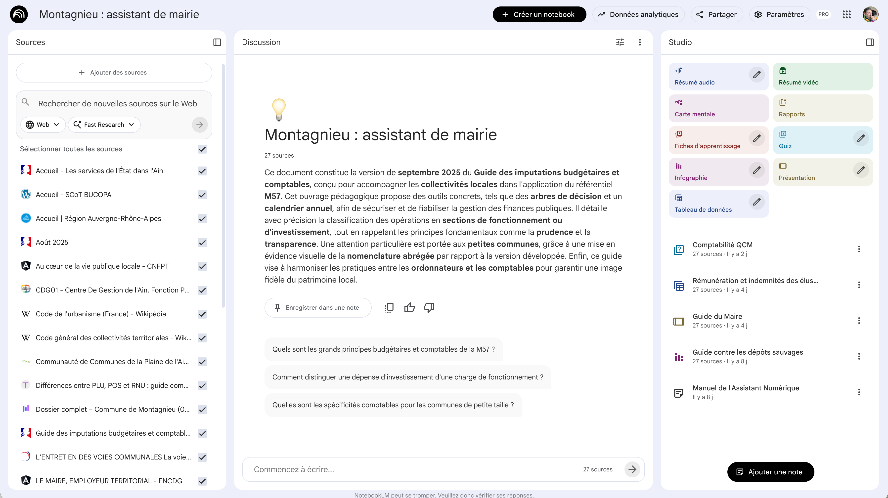

NotebookLM — Vue principale
NotebookLM est l'outil idéal quand vous avez vos propres documents à analyser. Contrairement à Gemini qui puise dans ses connaissances générales, NotebookLM travaille exclusivement à partir de vos sources : vos PDF, vos sites web, vos fichiers audio ou vidéo. C'est votre assistant de recherche personnel, qui ne va jamais inventer d'informations. Utilisez-le pour explorer un corpus de documents, croiser des sources, produire des synthèses ou créer des supports pédagogiques à partir de vos propres contenus.
Cliquez sur les pastilles orange pour découvrir chaque fonctionnalité

Cliquez sur une pastille pour en savoir plus